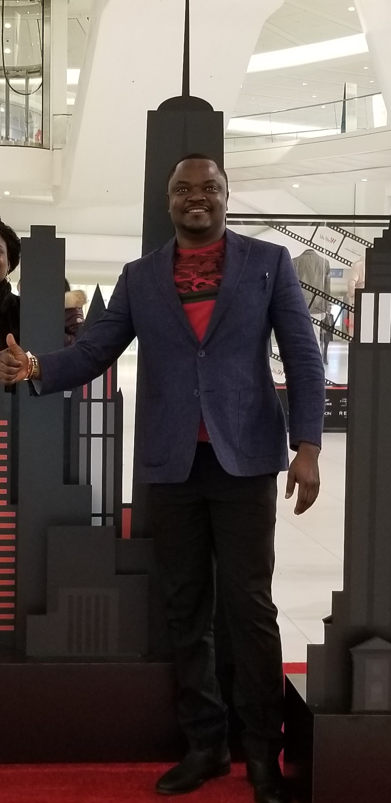

About Me

My name is Oluwayemi Kehinde. I was born in Lagos, Nigeria. I am from a family of six and as at present, I am the only one here in the United States. I believe that most people, if not all, would agree with me that the United States of America is not an easy place to live without any support system. I chose not to go for any government assistance because I wasn't brought up that way. The mindset at the time was a reminsce of an addage i repeately hear from my father and i quote The hands of those who always receive are always at the bottom and for those who always give, their hands will always be at the top. It has always worked for me and i don't intend changing anytime soon.
How did i get to America?
In 2004, It was my final year in college and i got information from the United States Consulate General about a program called the Diversity Visa Lottery Program. In the last month of thesame year, I applied for this program and fast forward a year later, I received a letter from the embassy that I am far along the way to becoming United States Permanent Resident. In June 11, 2006, I was stamped as a permanent resident and at present, a citizen!
About My Portfolio
In my portfolio, you are going to see pictures from my running club. I am a member of New York Road Runners who have completed multiples Half Marathon. I also completed my first Marathon in 2017! Every Tuesday's and Thursday's, I run through Brooklyn Bridge Park and over the bridge to Madison Square Garden (About 7.1 miles) with a running group called Wedding Hashers. We ran into couples who just got married every so often and ask to take pictures with them in our Wedding Tuxedo shirts. Please enjoy!